Windows¶
Installation Overview¶
To use our AgentNet annotation tool, you have to install and setup the following 3 tools:
- OBS is used for recording your desktop screen.
- Browser Extension is used for obtaining the webpage html data.
- AgentNet is a our annotation app that uses OBS to record your desktop and browser extension to get the webpage html data.
Step 1 OBS Setup¶
1. Download & Installation¶
1.1 Download OBS 30.1.2 version from this link (Please don't install other versions).¶
1.2 Double click on: OBS-Studio-30.1.2-Full-Installer-x64.exe.¶
1.3 Follow the instructions to install OBS, using the default setting.¶
2. Setup OBS Auto-Configuration¶
2.1 Open OBS¶
2.2 Skip Update: If you see "New update available", choose "Skip"¶
2.3 Usage Information: Choose Optimize just for recording¶
2.4 Video Setting: Click "Next"¶
2.5 Final Results: Click "Apply Settings"¶
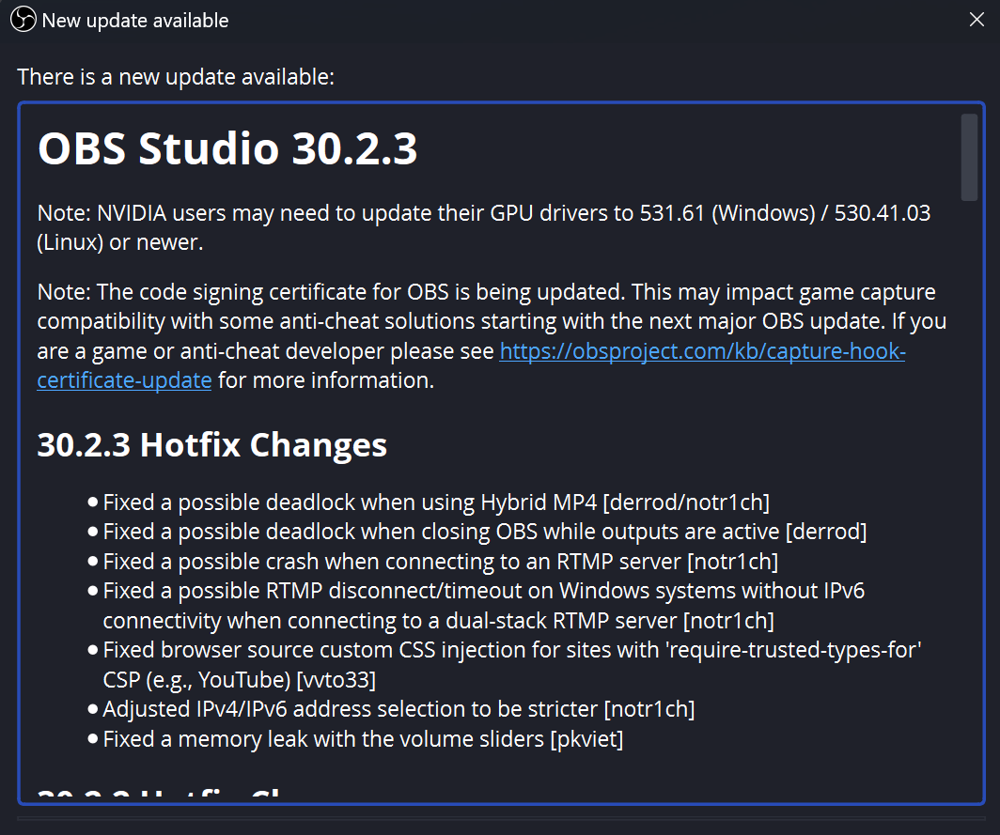
2.2
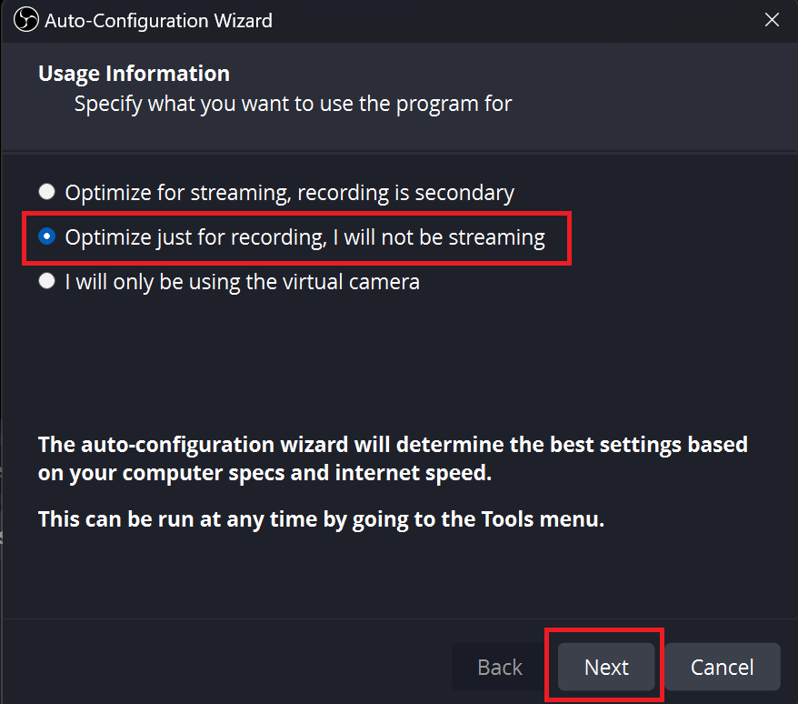
2.3
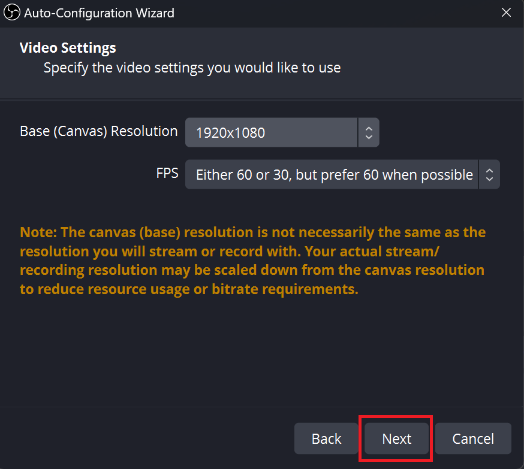
2.4
3. Setup OBS Websocket Server¶
3.1 Click "Tools" select "WebSocket Server Settings".¶
3.2 Check "Enable WebSocket server" and uncheck "Enable Authentication.", Click "Apply," then "Ok."¶
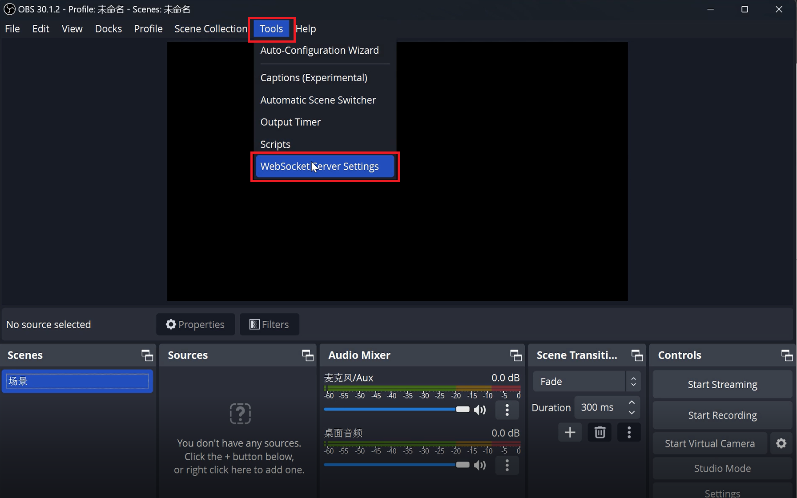
3.1
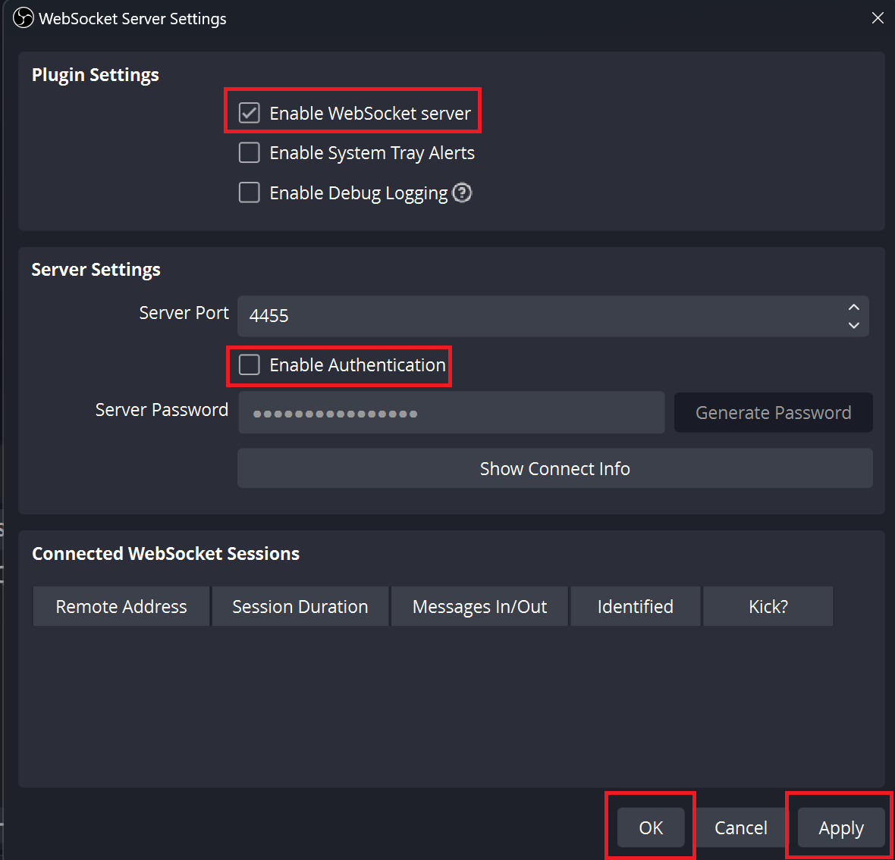
3.2
4. Add Display Capture¶
4.1 Back on the home page of OBS, click "Scene"/场景 in "Scenes" ①, click the "+" button ② and then click "Display Capture" ③. Keep clicking "OK" to create new source.¶
4.2 You should see your current desktop screen on the canvas.¶
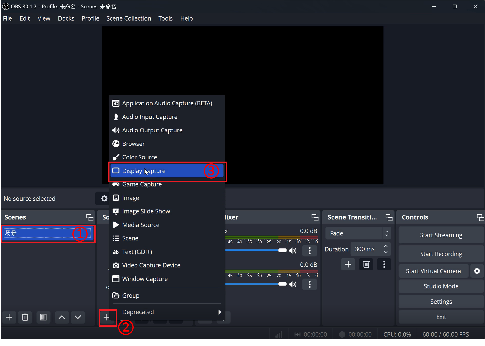
4.1
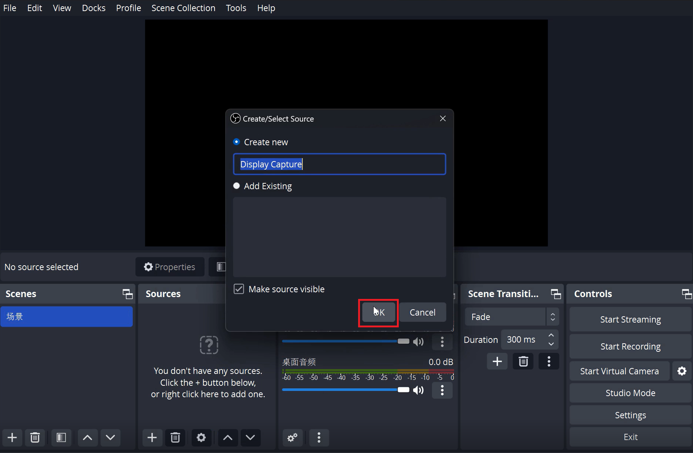
4.1
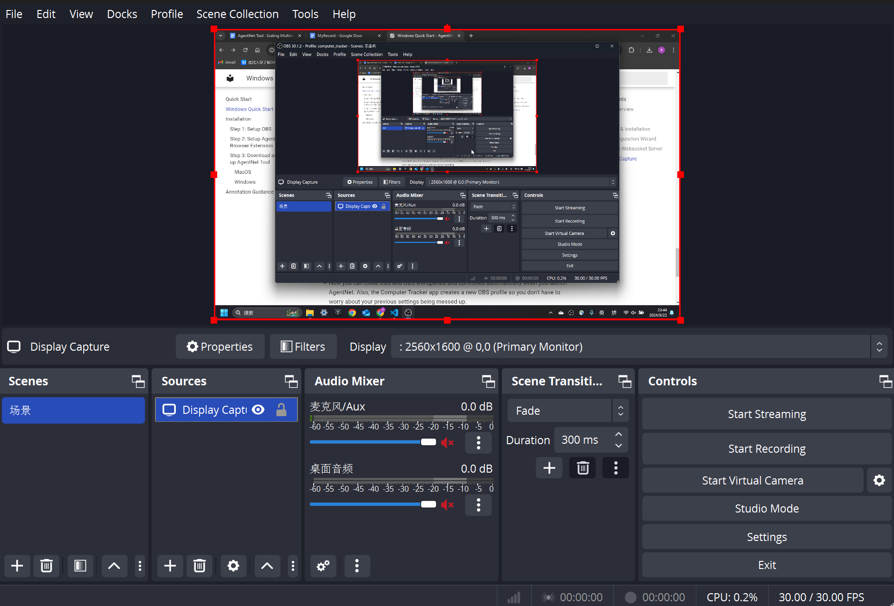
4.2
5. OBS Setup Tutorial Video (Optional)¶
Here's a tutorial video for all the steps mentioned. Skip if you've already followed the instructions.
Step 2 Install AgentNet Browser Extension¶
1. Download and unzip the browser extension: Link¶
2. Install the extension in your browser¶
Take Google Chrome as an example:
2.1 Click "Customize and Control Google Chrome" -> "Extensions" -> "Manage Extensions"¶
2.2 Turn on Developer mode, click Load unpacked¶
2.3 Enter the unzipped folder "htmlsniffer" then select the htmlsniffer folder inside.¶
2.4 Then you will see the extension loaded in your browser!¶
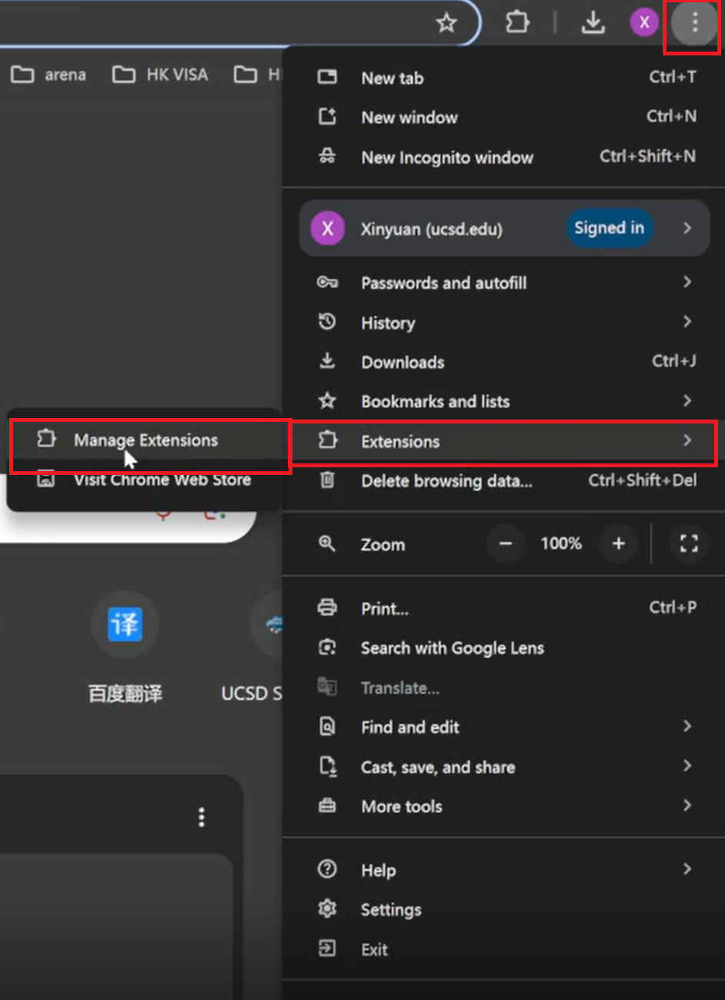
2.1
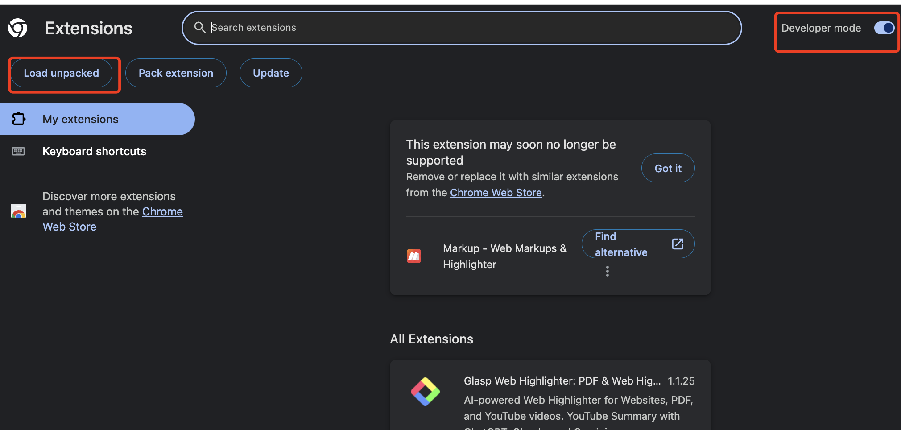
2.2
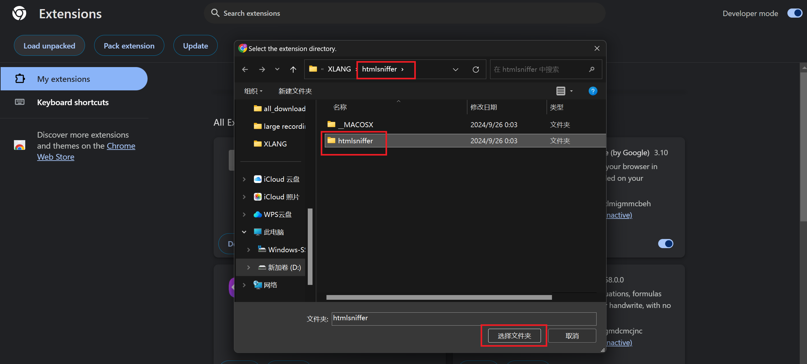
2.3
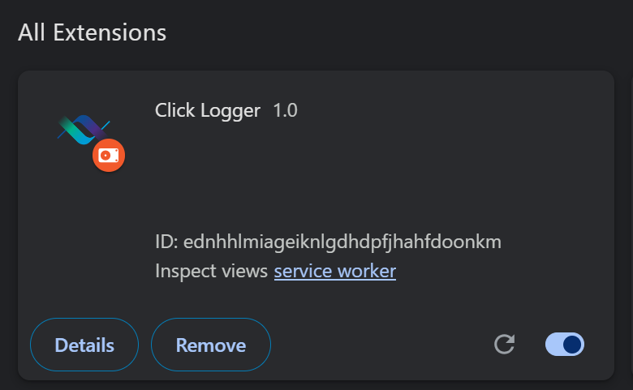
2.4
Step 3 Download and Setup AgentNet Tool¶
1. Download and unzip the app from Link¶
1.1 Click agentnet-annotator.exe in the folder to open AgentNet Tool¶
1.2 Note: If you click the .exe file but the window didn't show up, please check your OBS setting. Make sure your OBS is the right version and everything is correctly set up.¶
2. Enable Privacy & Security Permissions¶
2.1 If you encounter alert from Microsoft Defender SmartScreen, click "more information", then click "Run anyway".¶
2.2 If you see the Windows Safety Center alert, click "Allow" for backend.exe.¶
2.3 After logging in using Google Account (or Prolific account), you can see the start recording page in "Home":¶
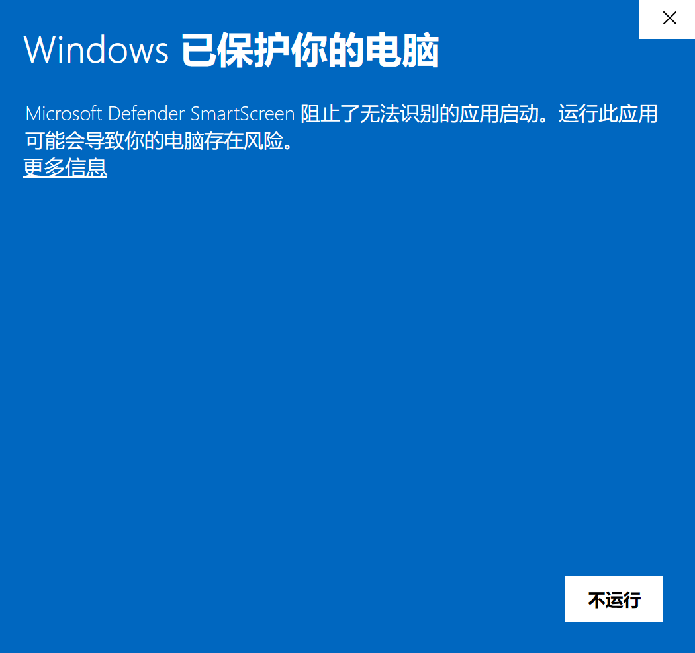
2.1
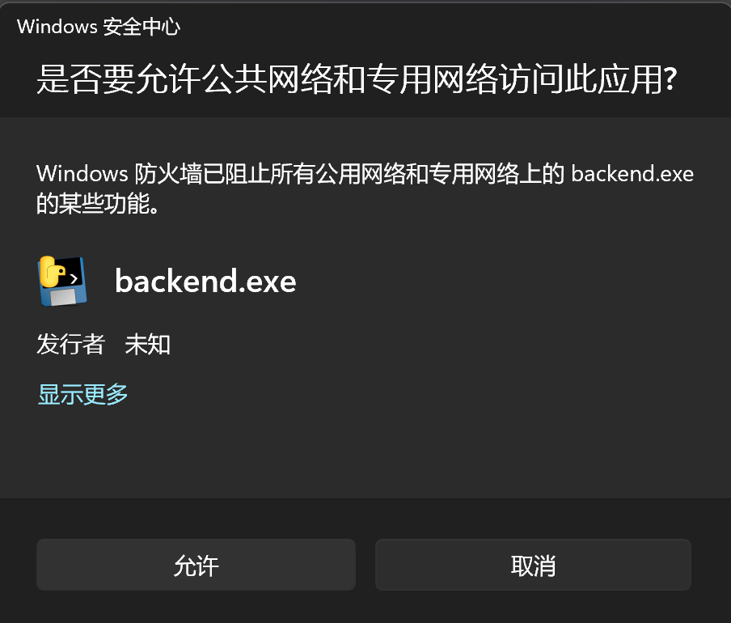
2.2
2.3
3. A Common Issue¶
You may meet this bug if you install OBS and the app for the first time
When you click "Start Recording", the OBS doesn't start to record (OBS Icon didn't turn red).
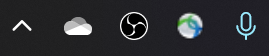
Click the OBS, this bug shows:
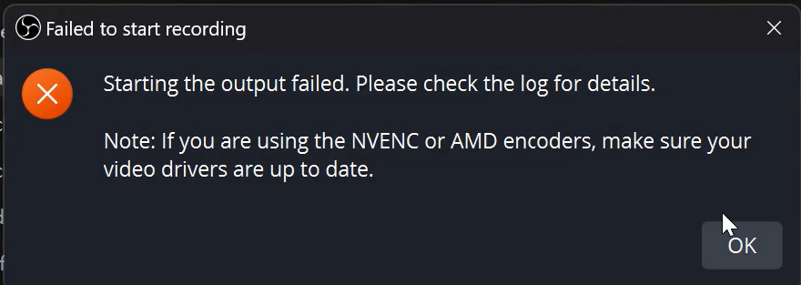
No worry, this is because our app needs to set up OBS for the first time. You should close the app and the OBS, open the app again, then click start recording. You will be able to see the OBS Icon turns red, meaning recording started.
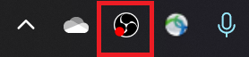
Here is a video about how to solve this bug.